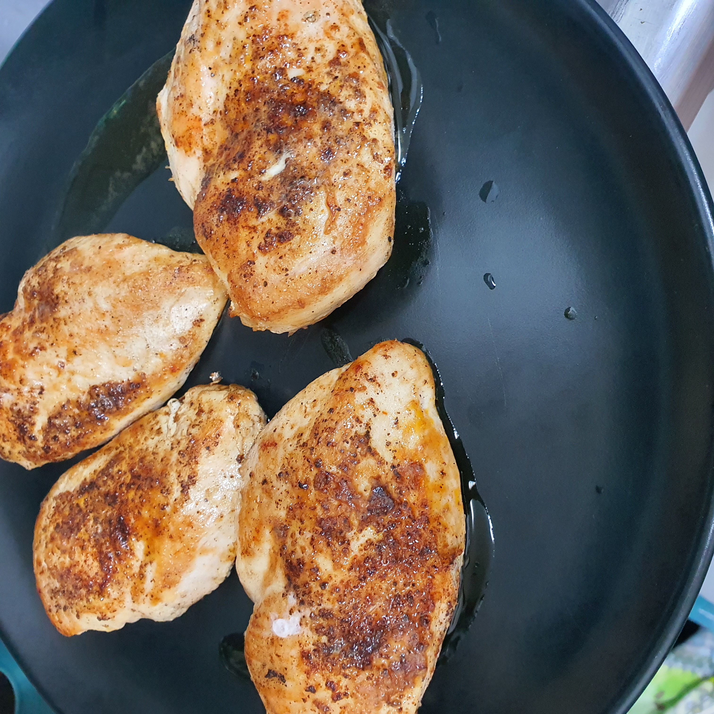

Pan-Seared Chicken Breasts

Recipe Description
As an attempt to be healthier this year, I tried my best to learn a few different chicken breast recipes, especially when I was cutting weight down. Although commonly hated for its dry texture, a well-cooked chicken breast can be remarkably juicy and delicious as well.
The key to this, however, is using a meat thermometer. Any cheap one will do, but it is the easiest way to avoid the dry, tasteless texture
that chicken breasts are commonly known for. I hope you all can enjoy this simple and quick way to cook an outstanding chicken breast!
Ingredients
- 2-3 boneless, skinless chicken breasts
- olive or other oil
- stainless or cast-iron pan
- meat thermometer
- kosher salt to taste
- freshly ground black pepper
- smoked paprika (optional)
Steps
- Preheat oven to ~190 Celsius / 375 Fahrenheit.
- Place pan on highest heat available (and turn on oven fan!)
- Pat chicken breasts dry with a paper towel, then season generously with salt, pepper, and paprika if using.
- When pan is rippingly hot, add a few splashes of oil, carefully place chicken in pan, and start a timer.
- When timer reaches 2 minutes, carefully flip chicken pieces over and turn off heat.
- Very carefully transfer pan (with chicken) into the preheated oven.
- Check the temperature after total time of 6 minutes! The temperature for a fully-cooked chicken breast is 160 F. When testing, make sure to probe the largest, thickest part of each piece.
- As the chicken's internal temperature will continue to raise while resting, you may pull the pieces when they reach around 155 F.
- When the chicken reaches the target temperature, take the pieces out of the pan and place on a deep plate or bowl to cool.
- After allowing the chicken to rest a few minutes, enjoy!! Don't forget to save/reserve/use all the juice that comes out as well!